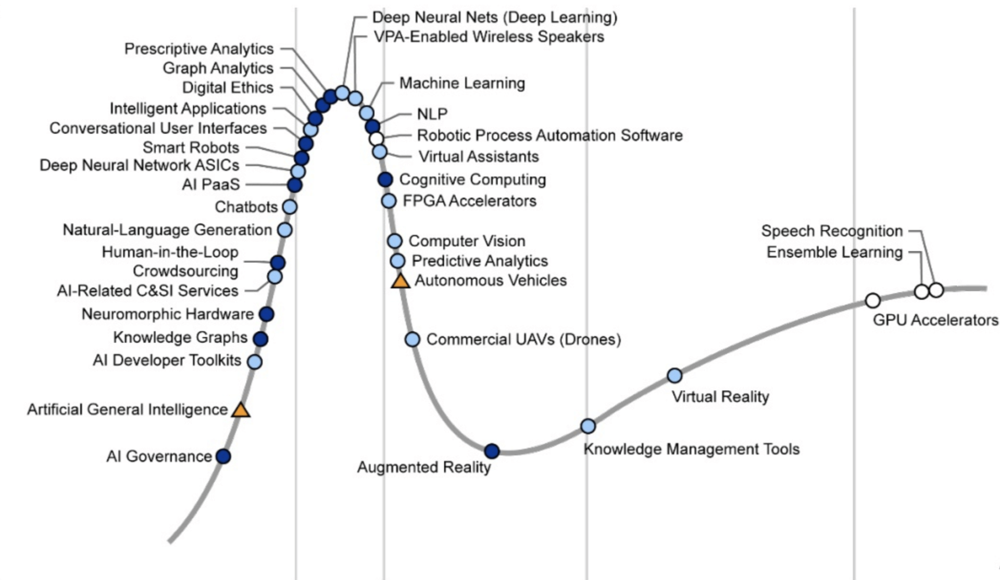

- 00 开篇词 为什么说每个软件工程师都应该懂大数据技术？.md
- 01 大数据技术发展史：大数据的前世今生.md
- 02 大数据应用发展史：从搜索引擎到人工智能.md
- 03 大数据应用领域：数据驱动一切.md
- 04 移动计算比移动数据更划算.md
- 05 从RAID看垂直伸缩到水平伸缩的演化.md
- 06 新技术层出不穷，HDFS依然是存储的王者.md
- 07 为什么说MapReduce既是编程模型又是计算框架？.md
- 08 MapReduce如何让数据完成一次旅行？.md
- 09 为什么我们管Yarn叫作资源调度框架？.md
- 10 模块答疑：我们能从Hadoop学到什么？.md
- 11 Hive是如何让MapReduce实现SQL操作的？.md
- 12 我们并没有觉得MapReduce速度慢，直到Spark出现.md
- 13 同样的本质，为何Spark可以更高效？.md
- 14 BigTable的开源实现：HBase.md
- 15 流式计算的代表：Storm、Flink、Spark Streaming.md
- 16 ZooKeeper是如何保证数据一致性的？.md
- 17 模块答疑：这么多技术，到底都能用在什么场景里？.md
- 18 如何自己开发一个大数据SQL引擎？.md
- 19 Spark的性能优化案例分析（上）.md
- 20 Spark的性能优化案例分析（下）.md
- 21 从阿里内部产品看海量数据处理系统的设计（上）：Doris的立项.md
- 22 从阿里内部产品看海量数据处理系统的设计（下）：架构与创新.md
- 23 大数据基准测试可以带来什么好处？.md
- 24 从大数据性能测试工具Dew看如何快速开发大数据系统.md
- 25 模块答疑：我能从大厂的大数据开发实践中学到什么？.md
- 26 互联网产品 + 大数据产品 = 大数据平台.md
- 27 大数据从哪里来？.md
- 28 知名大厂如何搭建大数据平台？.md
- 29 盘点可供中小企业参考的商业大数据平台.md
- 30 当大数据遇上物联网.md
- 31 模块答疑：为什么大数据平台至关重要？.md
- 32 互联网运营数据指标与可视化监控.md
- 33 一个电商网站订单下降的数据分析案例.md
- 34 A_B测试与灰度发布必知必会.md
- 35 如何利用大数据成为“增长黑客”？.md
- 36 模块答疑：为什么说数据驱动运营？.md
- 37 如何对数据进行分类和预测？.md
- 38 如何发掘数据之间的关系？.md
- 39 如何预测用户的喜好？.md
- 40 机器学习的数学原理是什么？.md
- 41 从感知机到神经网络算法.md
- 42 模块答疑：软件工程师如何进入人工智能领域？.md
- 所有的不确定都是机会——智慧写给你的新年寄语.md
- 第2季回归丨大数据之后，让我们回归后端.md
- 结束语 未来的你，有无限可能.md
42 模块答疑：软件工程师如何进入人工智能领域？
你好，我是李智慧。在大数据算法模块，我们一起学习了几种最常用的大数据算法，包括KNN分类算法、贝叶斯分类算法、PageRank网页排名算法、关联分析Apriori算法、聚类分析K-means算法、神经网络算法以及几种常见的推荐算法，算是对大数据算法有了初步了解。
作为软件工程师，如果想掌握一些大数据算法的背景知识，以便更好地和算法相关团队合作，那么以这个模块讨论的算法为基础，触类旁通，针对公司使用的算法再进一步了解和学习，基本上也就够用了。但是，如果想从软件工程师深入进人工智能领域，那么就还需要系统地学习和掌握机器学习各方面的知识。
下面根据我的经验，给你呈现一个软件工程师进入人工智能领域的“学习路线图”，希望可以帮助到想转型进入人工智能领域的同学。
数学基础
机器学习有时候也被称为统计学习，其实就是统计大量历史数据中的规律，构建算法模型，再利用模型对现在的数据进行分类和预测。所以学习机器学习算法，先要复习一下统计学和概率论方面的知识。
很多算法的特征与函数都用向量空间表示，很多大数据算法计算也可以转化为矩阵与向量计算。比如PageRank算法就可以将网页间的链接关系表示为一个稀疏矩阵，所有页面的PageRank值构成一个向量，然后将矩阵与向量不断迭代相乘就可以了。因此，你还需要再复习一下线性代数的知识。
专栏前面我们讨论过机器学习的数学原理，机器学习算法的推导过程，其实就是在模型假设空间寻找使结构风险为极小值的模型，而数学上的极小值就是一阶导数为0的值，因此还需要复习一下高等数学。
机器学习算法
大家普遍认为，系统学习机器学习算法最好的入门级课程是斯坦福大学的机器学习公开课，这门课程由吴恩达讲授，非常经典。还有几本比较经典的书籍可以和公开课相互参照，比如周志华的《机器学习》，俗称“西瓜书”，比较通俗易懂，适合入门；李航的《统计学习方法》，偏数学一些，可以不时翻看。
如果只是单纯学习算法，会比较枯燥，需要不断做一些算法的编程练习，除了学习过程中的一些算法编程练习，还可以参考《集体智慧编程》这本书，书中的例子都比较实用，可以根据书中的数据和代码进行练习。这本书偏重代码和应用，很适合软件工程师进行入门练习，不过这本书缺少算法的原理分析，算法比较少也偏简单。
以上这些书籍或者课程基本上都是大学教材或者相似课程的难度，如果要成为机器学习算法专家，就需要自己寻找一些更专业的书籍和论文来看了，这些资料主要是以英文为主，所以也需要你有不错的英语基础。
大数据技术与机器学习框架
在小规模的数据集上做算法练习，用Python程序在单机上运行就可以了，但是在真正的生产环境中，需要面对海量的数据处理计算需求，这就需要用到我们专栏前面讨论过的各种大数据技术产品。各种主流大数据产品都有自己的机器学习框架与算法库，比如Hadoop上有Mahout、Spark上有MLlib，借助这些算法库和工具，可以较快速地在大数据平台上开发机器学习应用程序。
Mahout和MLlib主要支持传统的机器学习算法，业界还有几款比较知名的深度学习框架：TensorFlow、Caffe，Intel也开源了基于Spark的深度学习库BigDL。
人工智能应用
学了这么多机器学习的知识，最终的目的还是应用，业界其实不缺懂算法的专家，但是却非常短缺能够将机器学习和业务结合，产生实际价值的专家。要想实现人工智能真正落地，一方面需要懂大数据和机器学习算法，另一方面需要深入了解具体的领域知识，能够发现业务中的痛点，并能够选择最合适的算法解决这个痛点。
很多时候解决问题不需要多么高大上的技术和算法，很普通的算法用对地方，也能产生巨大的效果，这才是业界最短缺的，而这也正是从软件开发转型人工智能的技术人员的优势，有多年的领域开发积淀，有技术实现和验证的能力，再加上大数据和机器学习能力加持，几项结合产生化学反应，也许能在自己的企业和行业领域创造出巨大的价值。
根据Gantner发布的2018年人工智能技术成熟度曲线，我给你总结一下目前人工智能技术的发展状况，供你参考。

处于上升阶段，即具有长远发展前景的人工智能技术包括：
人工智能管理：根据人工智能模型和数据管理企业，包括决策权的划分、组织结构、绩效管理等。
通用人工智能：目前的人工智能仅仅在相对封闭、重复的场景中适用，稍稍扩大应用范围，特别是和人类交互的时候，经常表现得非常“弱智”。但是放到更长远来看，通用人工智能，即强人工智能还是值得期待的。
知识图谱：将具有各种关联关系的信息通过图的方式组织在一起，自动发现各种信息、数据、资产、商品、人、知识等各种关系并加以利用。
神经形态硬件：按照神经网络神经元形态构造硬件，即“芯片大脑”。
自然语言生成：根据语境语义自动生成自然语言，既可以生成各种有格式化的报告，也可以生成诗词歌赋等文艺作品。
处于顶部，被众人期待，但是可能有些过热的人工智能技术包括：
人工智能平台即服务：最近几年，各家云服务厂商都在加大云服务平台上人工智能的投入和宣传，百度宣布自己All in人工智能，阿里云人工智能也占据了云平台的重要板块。
深度神经网络专用芯片：针对深度学习算法专门设计的芯片，拥有比GPU更好的计算性能。
智能机器人：不同于工厂流水线上的工业机器人，智能机器人用于酒店、机场、餐厅、医院，与人交互，直接服务人类。
语音交互：以语音识别、自然语言理解、语音合成技术为基础的语音交互技术，以智能语音客服为代表的各种聊天机器人、虚拟助理等语音交互产品。
智能应用：为各种传统软件系统赋能人工智能，在ERP、CRM等各种传统应用中集成人工智能特性。
图形分析：根据图形分析数据特性，发现数据聚类特性，发现孤立点，还可进行路径优化等。
目标分析：通过人工智能优化决策分析，发现达成预定条件目标的首选行动方案。
深度学习：应用比较广泛的是卷积神经网络和递归神经网络，在图片、语音、视频等非结构化数据处理方面有良好效果。
自然语言处理：传统上自然语言处理的方法是语法与语义分析，但是现阶段越来越多使用深度学习进行自然语言处理。
虚拟助理：通过语音交互的形式，为用户订票、订餐、打车等，仿佛一个虚拟的个人助理。
经过泡沫洗礼，关注度下滑，进入冷静期的人工智能技术：
计算机视觉：通过获取、分析现实物理世界的图片和视频，提取出有意义的信息。包括机器视觉、光学字符识别、图像识别、模式识别、人脸识别、边缘检测和运动检测等，可应用于自动驾驶、生物识别、虚拟现实各种领域。
预测分析：预测将来要发生什么、将来会发生什么，主要基于回归分析、多元统计、模式匹配、预测建模等机器学习技术。很多时候，预测有一定效果，但是距人们的期望还有一定距离。
自动驾驶：利用激光雷达、摄像头、GPS和地图数据等多种车载传感和定位技术，结合机器学习模型实现车辆在无人控制的情况下自动驾驶。从人工智能角度看，自动驾驶技术上应该已经趋于成熟，但是具体应用看起来还很遥远。
增强现实AR：将虚拟的文本、图形、视频叠加到现实的视频上，起到增强现实的效果。在各种谍战片里，特工们戴着炫酷的AR眼镜无所不能；但在现实中，大规模商用还尚不成熟。
人工智能将会引领下一次科技革命的浪潮，基本已经得到人们的普遍认可，但是越是革命性的事物，道路越是艰难；不过道路越是艰难，收获越是巨大。人工智能对我们生产生活的改造将是全方位的，不管你现在身处什么领域，总能找到和人工智能结合的机会，期待将来人工智能科技革命的浪潮中看到你的身影。
2019年，如果你也想进入人工智能领域，欢迎你留言和我聊聊你的想法，希望你的思考也可以帮助到更多同学。
© 2019 - 2023 Liangliang Lee. Powered by gin and hexo-theme-book.